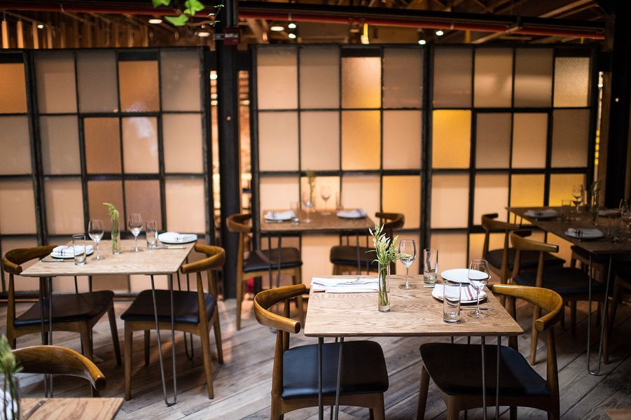

98 Loisaida Ave.
S—T 3pm—12am S—T 3pm—12am
Lois

We serve a rotating menu of wines on tap and seasonal small plates. We believe that good food does not need to be overwrought or fancy and that wine should be exciting, never intimidating. At Lois, they never are.
We chose to do all our wines on tap instead of traditional bottles to reduce waste, make our prices accessible, keep our wine fresh.
Lois is the brainchild of two friends with a simple shared idea: when it comes to wine and food, accessibility quality are not mutually exclusive. We're obsessed with our adopted neighborhood of Alphabet City, and love sharing great wine and creative food with our friends and neighbors on Avenue C (also called LOISaida Avenue).
Read more at Fare Points
Nora O'Malley
Owner & Beverage Director
Phoebe Connell
Owner & Food Director
David Hitchner
Owner
98 Loisaida Avenue
New York, NY 10009
Please contact us with any questions including but not limited to: our current menus, location, hours, private parties, information about wine on tap, general life advice.
212-475-1400
info@loisbarnyc.com
Twitter
@loisbarnyc
Facebook
Facebook.com/loisbarnyc
Instagram
@loisbarnyc
Lois was designed with love by
Michael J Groth